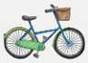
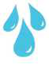
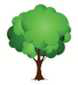
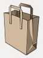
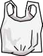
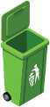

TEMATIKA 5: MJEDISI DHE SHËNDETI3. Gëzuar ditën tënde, Tokë!
Puno në klasë
1.
Po ti, si mund ta ndihmosh Tokën?
Plotëso fjalitë me fjalët që mungojnë. Zgjidh një fjalë nga lista, pastaj zgjidh vendin bosh ku duhet të shkojë. Mund ta shkruash fjalën edhe vetë.
Fjalët
- Në vend të
 së prindërve, ne zgjedhim të ecim më këmbë së bashku apo të përdorim
së prindërve, ne zgjedhim të ecim më këmbë së bashku apo të përdorim 
sa herë që mundemi. - Unë e kursej

kur laj dhëmbët, duke e mbyllur rubinetin. - Ne mbjellim sa më shumë

. - Unë përdor qese

në vend të qeseve
. - Unë e fik kur dal nga dhoma.
- Unë dhe familja ime i hedhim mbeturinat nëpër

e caktuar, në vend që t’i hedhim ato të gjitha në një vend apo t’i djegim.